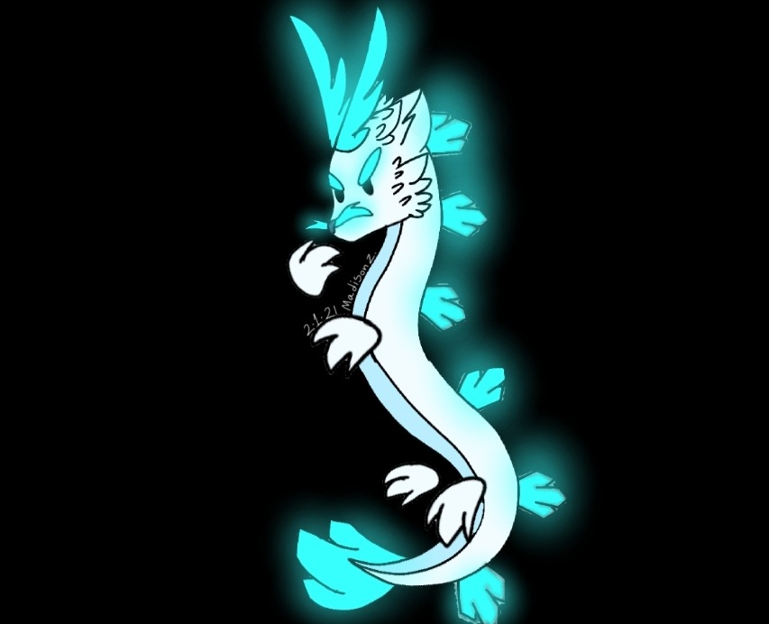

Este amiguito se llama google drive
¡Cóntactame! ¡Roblox!
Hola =)
:D xD
Juego roblox y me gusta mi juego de puros patos
Mi juego de patos esta aca abajo actualiza la página si no carga
Este es el fin de la pagina web :3

CUAAAK!!!!
este juego es fácil de hacer, inspirado en patos o pollos (no se pero la ave es amarilla)